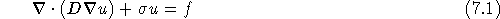

SMG is a parallel semicoarsening multigrid solver for the linear systems arising from finite difference, finite volume, or finite element discretizations of the diffusion equation,

on logically rectangular grids. The code solves both 2D and 3D problems with discretization stencils of up to 9-point in 2D and up to 27-point in 3D. See [&make_named_href('', "node39.html#SSchaffer_1998a","[10]"), &make_named_href('', "node39.html#PNBrown_RDFalgout_JEJones_2000","[2]"), &make_named_href('', "node39.html#RDFalgout_JEJones_2000","[5]")] for details on the algorithm and its parallel implementation/performance.
SMG is a particularly robust method. The algorithm semicoarsens in the z-direction and uses plane smoothing. The xy plane-solves are effected by one V-cycle of the 2D SMG algorithm, which semicoarsens in the y-direction and uses line smoothing.